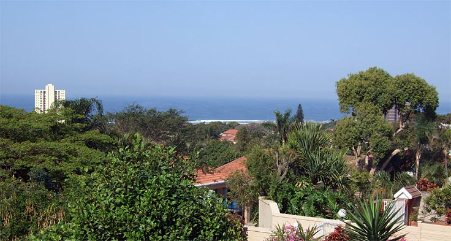

Villa Coco Guesthouse
Shawn and Jackie Thompson spent eleven years in Seychelles and Mauritius and Villa Coco has a distinct island flavour to it. Simple in design, cool and relaxing, Villa Coco is the ideal spot for businessmen yet can also offer the tourist a central location to access the many attractions in the surrounding areas.
Jackie draws on her island background to prepare healthy, but tasty breakfasts. She can also be persuaded to conjure up exotic dishes such as chicken and prawn curry or grilled fish “creole style” for special occasions.
Shawn is a keen fisherman and when not away on business, will gladly take guests out for a quick fishing excursion on his boat, aptly named, “Stress Killer”. He is also an avid rugby fan and die-hard Sharks supporter. Its probably the real reason why 43 Kelvin Place was chosen as the location for Villa Coco Guesthouse – the roar of the Kings Park faithful can almost be heard on big occasions.
